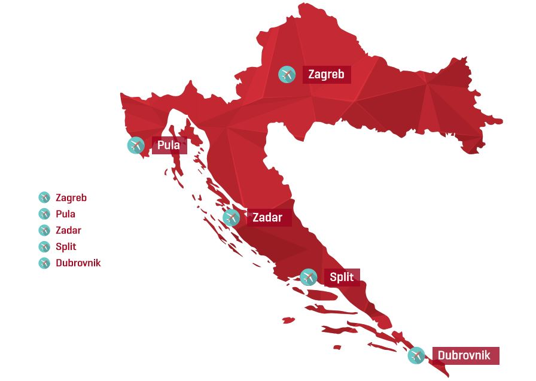

There are international airports in Zagreb, Split, Dubrovnik, Zadar, Pula, Rijeka (on the island of Krk), Osijek, Bol and Mali Lošinj. Currently, the following low cost airlines are flying to Croatia: Jet2, EasyJet, Eurowings, TUIfly, Ryanair, Thomson, flydubai and Wizz Air. Major established companies that fly to Croatia include the domestic Croatia Airlines (member of the Star Alliance), Air France, Aeroflot, Lufthansa, Emirates, Finnair, Austrian Airlines, KLM, Qatar Airways, Swiss International Air Lines, British Airways and Turkish Airlines. Seasonal intercontinental flights also operate from and to Croatia. In January 2011 the U.S. Federal Aviation Administration (FAA) assessed the Government of Croatia's Civil Aviation Authority announcing that Croatia complied with International Civil Aviation Organization (ICAO) aviation safety standards for oversight of Croatia's air carrier opinions.[1] IASA Category 1 rating and that Croatian air carriers are authorized Croatia to the US.
List of Airports:
Croatia's National Carrier
Major Airports in Croatia
The Croatian railway network is classified into
three groups: railways of international, regional and local
significance. The most important railway lines follow Pan-European
corridors V (branch B) and X, they connect at Zagreb with each other.
There are connections to the railway networks of Slovenia, Hungary,
Bosnia and Herzegovina and Serbia.
The official rail speed record in Croatia is 181 km/h (112 mph). Maximum speed reached in regular service is 160 km/h (99 mph) on parts of the Novska–Tovarnik line.
Recently Croatian Railways introduced a series of modern tilting trains produced by the German branch of Bombardier Transportation. They usually deployed on the mountainous route between the two largest Croatian cities, Zagreb and Split. Although they can sometimes be found on other routes in the country. Contrary to regular overnight fast trains between Zagreb and Split with scheduled travelling time of circa 8 hours in total, tilting trains on the Zagreb–Split route (lines M202 and M604) offer passengers a faster journey with a journey time of about 6 hours.
Croatian Railways' plan to build their first high-speed railway service is progressing. Construction of an entirely new line from Karlovac to Rijeka, and reconstruction of the line from the Hungarian border to Karlovac should have originally begun in the fall of 2007. The line is going to be entirely electrified and in order to speed up the journey even more shall be 269 km (167 mi) long from end to end, 61 km (38 mi) shorter than the existing line. The journey from Zagreb to Rijeka will be cut to one hour compared to 4 hours with the existing track. The line is intended to carry the increasing amount of goods that enter Europe, at the Croatian Port of Rijeka and are then transported to destinations across central and eastern Europe.
Railway links with other countries
Rail Network in Croatia, Bosnia and Herzegovina
From the time of Napoleon and building the Louisiana road, the road
transport in Croatia has significantly improved, topping most European
countries. Croatian highways are widely regarded as being one of the
most modern and safe in Europe. This is because the largest part
of the Croatian motorway and expressway system (autoceste and brze ceste, resp.)
has been recently constructed (mainly in the 2000s), and further construction is
continuing. The motorways in Croatia connect most major Croatian cities and all
major seaports. The two longest routes, the A1 and the A3, span the better part
of the country and the motorway network connects most major border crossings.
Tourism is of major importance for the Croatian economy, and as
most tourists come to vacation in Croatia in their own cars, the
highways serve to alleviate summer jams. They have also been used
as a means of stimulating urgently needed economic growth, and for
the sustainable development of this country. Croatia now has a considerable
highway density for a country of its size, helping it cope with the consequences
of being a transition economy and having suffered in the Croatian War of
Independence. As of 2011, Croatia has a total of 29,410
kilometers (18,270 mi) of roads.
Road Network in Croatia
Croatia has several large seaports. The largest seaport with the deepest channel to a port in the Adriatic is Port of Rijeka on the northern Croatian coast, followed by Ploče in southern Dalmatia. The port of Ploče is of strategic importance for the industries of Bosnia and Herzegovina. The largest Croatian passenger port is Split in Dalmatia, also called gateway to the islands, followed by Zadar. There are 66 inhabited islands along the Croatian coast which means there is a large number of local ferry connections. Croatia is also on the important Danube waterway, which connects Eastern and Central Europe. The major Danube port is Vukovar.
Ports and harbors:
Sea Network in Croatia